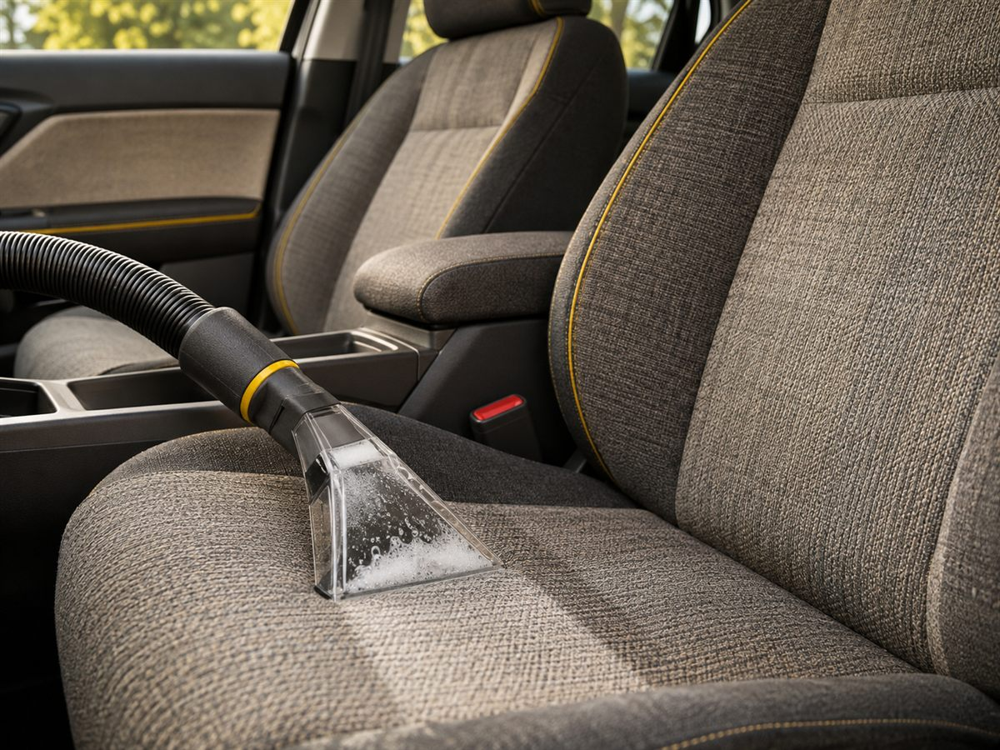

Grondige extractie
Reinigingsoplossing wordt ingebracht en samen met losgekomen vuil opgezogen.
Huur eenvoudig een Kärcher tapijtreiniger. Persoonlijk bij jou thuis bezorgd, met deskundig advies en flexibele huurmogelijkheden.

Professioneel reinigen, eenvoudig huren
Een krachtige, compacte reiniger voor een grondige opfrisbeurt van meubels en textiel in huis of auto.
De Kärcher Puzzi 8/1 is een professionele sproei-extractiereiniger. De machine sproeit water met reinigingsmiddel diep in de vezels van tapijt of bekleding en zuigt het vuile water daarna weer op. Zo pak je vuil, vlekken en nare geurtjes effectief aan.
De Puzzi is geschikt voor banken, stoelen, matrassen, tapijten, vloerkleden en autobekleding. Dankzij het compacte ontwerp is hij relatief eenvoudig te bedienen. De krachtige zuigwerking neemt veel vocht direct weer op, zodat het gereinigde oppervlak relatief snel droogt.
Bekijk de huurprijzenReinigingsoplossing wordt ingebracht en samen met losgekomen vuil opgezogen.
Geschikt voor meubels, matrassen, tapijt, vloerkleden en autobekleding.
De krachtige zuigwerking helpt de droogtijd na het reinigen te beperken.
Van handige bezorgtijd tot persoonlijk advies: ik zorg ervoor dat je zonder zorgen aan de slag kunt met een schoon resultaat.
Overdag aan het werk? Geen probleem. We spreken samen een bezorgmoment af, ook in de avonduren.
Heb je vragen? Je kunt eenvoudig advies krijgen via WhatsApp of persoonlijk tijdens de bezorging. Ik help je graag op weg.
Ik bezorg de Kärcher Puzzi 8/1 zelf bij je thuis en geef hem persoonlijk aan je over.
Je betaalt geen borg bij het huren van de tapijtreiniger. Zo weet je vooraf waar je aan toe bent.
Maak je huur compleet met de juiste reinigingstabletten en impregneerspray voor goede nazorg van je meubels. Beide zijn optioneel bij te bestellen.
Voor meubels en textiel
Van een bank die wel een opfrisbeurt kan gebruiken tot eetkamerstoelen en vloerkleden: met de Kärcher reiniger geef je jouw meubels en bekleding een grondige schoonmaakbeurt.



Controleer bij matrassen altijd of het materiaal geschikt is voor natte extractiereiniging.
Huur eenvoudig een Kärcher reiniger en ga zelf aan de slag. Ik bezorg hem persoonlijk bij je thuis!
Bekijk de verhuurprijzenKies wat bij je past
Reserveer de periode die past bij jouw schoonmaakklus.
Voor een gerichte klus
€ 40,-
Perfect voor een gerichte schoonmaakklus. Huur de Kärcher reiniger voor een dag en geef jouw meubels, tapijt of bekleding een grondige reinigingsbeurt.
Reserveer dagverhuurMeer tijd, voordelig geregeld
€ 70,-
Van vrijdagavond tot maandagavond
Neem lekker de tijd voor je schoonmaakklus. Met de weekenddeal heb je de hele zaterdag en zondag de beschikking over de reiniger, zonder dat je je hoeft te haasten.
Reserveer weekenddealDe genoemde huurprijzen zijn exclusief eventuele reinigingstabletten en impregneerspray. Deze producten zijn optioneel bij te bestellen.

Een vertrouwd gezicht
Ik ben Rik van Reeuwijk. Bij mij huur je niet zomaar een reiniger: ik bezorg de Kärcher persoonlijk bij je thuis.
Bij de bezorging leg ik je rustig uit hoe de machine werkt en geef ik tips voor een goed resultaat. Heb je vooraf of tijdens het schoonmaken een vraag? Stuur me gerust een WhatsApp. Ik help je graag op weg, zodat je met vertrouwen aan je klus begint.
Stel mij gerust een vraagOptioneel bij te bestellen
Breid je huur eenvoudig uit. Ik bezorg de aanvullende producten tegelijk met de reiniger.
Voor een optimaal reinigingsresultaat. Handig bij de Kärcher tapijtreiniger.
Een aanvullende bescherming voor je meubels na het reinigen.
Deze producten zijn niet inbegrepen in de basis-huurprijs. Vraag gerust naar de mogelijkheden.
Van het kiezen van je huurperiode tot het ophalen van de reiniger: zo geregeld.
Vraag naar beschikbaarheid via WhatsAppKies zelf voor welke periode je de tapijtreiniger wilt huren.
Stuur eenvoudig een WhatsApp-bericht om te informeren of de Kärcher Puzzi 8/1 beschikbaar is in jouw gewenste huurperiode.
Je ontvangt persoonlijk bericht met de bevestiging van je reservering en de verdere afspraken.
Ik kom de Kärcher Puzzi 8/1 persoonlijk bij je thuis bezorgen, zodat je direct aan de slag kunt.
Na afloop van de afgesproken huurperiode kom ik de reiniger weer bij je ophalen.
Goed om te weten
Staat jouw vraag er niet bij? Stuur mij gerust een bericht.
Dagverhuur kost € 40,-. De weekenddeal kost € 70,- en loopt van vrijdagavond tot maandagavond.
Nee, reinigingstabletten en impregneerspray zijn optioneel bij te bestellen en niet inbegrepen in de huurprijs.
Ja, bezorging in de avond is mogelijk. Neem contact op om een moment af te stemmen.
Dat hangt af van het materiaal en de instructies van de fabrikant. Controleer altijd het onderhoudslabel en test eerst op een onopvallende plek.
Stuur mij een WhatsApp om de beschikbaarheid voor je gewenste huurperiode te bespreken. Er is geen online boekingssysteem.
Klaar om te beginnen?
Vragen over huren of het juiste reinigingsmiddel? Stuur mij gerust een WhatsApp.
Stel je vraag via WhatsAppPersoonlijk contact, snel geregeld.
Vraag naar beschikbaarheid of bespreek welke huurperiode bij je past.